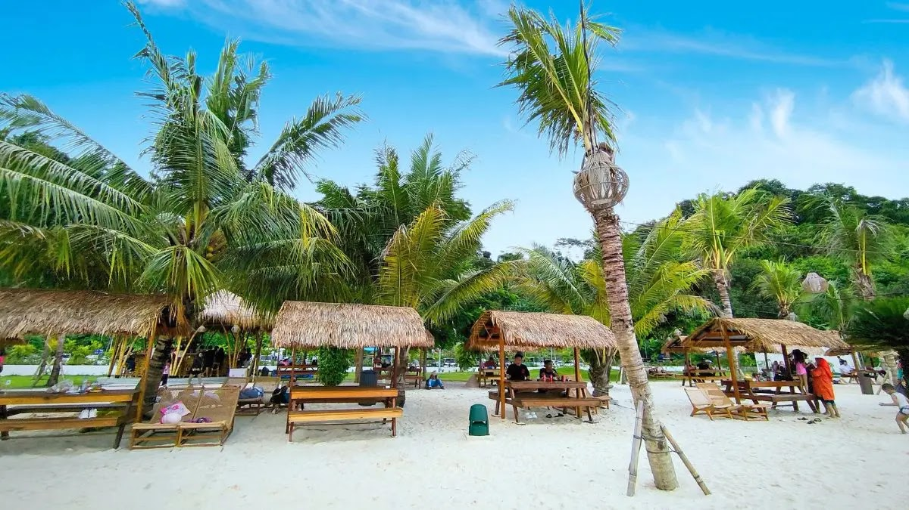
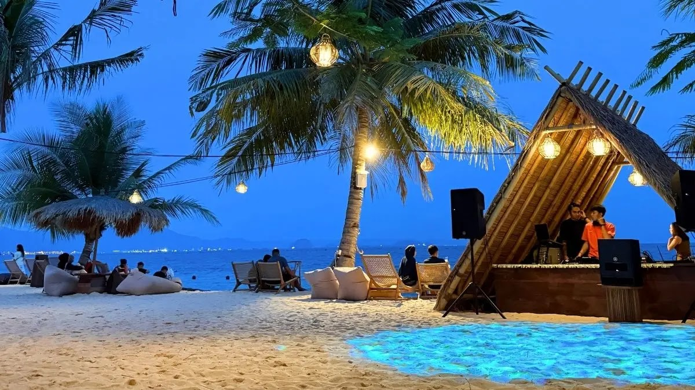

Galeri




Pantai indah dengan pasir putih dan sunset terbaik
Pesan TiketKyoko Beach adalah destinasi wisata pantai modern dengan pemandangan laut biru, spot foto estetik, dan suasana tenang untuk liburan keluarga maupun teman. Kyokko Beach (Pantai Kyokko) adalah destinasi beach club modern terbaru di Pesawaran, Lampung, yang menawarkan pasir putih bersih dan laut biru jernih layaknya di Bali. Berlokasi dekat Marriott Resort, pantai ini menghadirkan suasana tropis yang santai, cocok untuk bersantai, berenang, atau menikmati senja dengan fasilitas kekinian. Daya Tarik Utama Kyokko Beach. Beach Club Modern: Salah satu pelopor konsep beach club di Lampung, menawarkan area santai dengan saung bambu dan kursi kayu khas tropis. Pemandangan Instagramable: Tempatnya sangat estetis dengan spot mirror selfie dan pemandangan laut yang tenang, sering dijuluki "Bali-nya Lampung". Kids Friendly & Santai: Selain untuk anak muda, tempat ini ramah keluarga dengan garis pantai landai yang aman untuk bermain air. Aktivitas Seru: Tersedia opsi berselancar, bersantai sore hingga malam, dan konser DJ pada akhir pekan. Lokasi dan Akses:Pantai ini berada di Desa Hurun, Kecamatan Teluk Pandan, Kabupaten Pesawaran, Lampung. Dapat ditempuh sekitar 30-40 menit dari pusat kota Bandar Lampung, lokasinya satu arah dengan Pantai Mutun.Tips Berkunjung:Larangan Makanan Luar: Pengelola melarang pengunjung membawa makanan dan minuman dari luar.Tiket Masuk: Harga tiket berkisar antara Rp80.000 - Rp120.000 (menurut data per April 2026), yang bisa ditukar dengan minuman (soft drink/infused water).Waktu Terbaik: Sore hari adalah waktu favorit untuk menikmati sunset.Pantai Kyokko menjadi salah satu pilihan liburan yang populer karena kebersihannya yang terjaga dan fasilitas yang modern


Email: info@kyokobeach.com
Telepon: +62 812-0000-0000